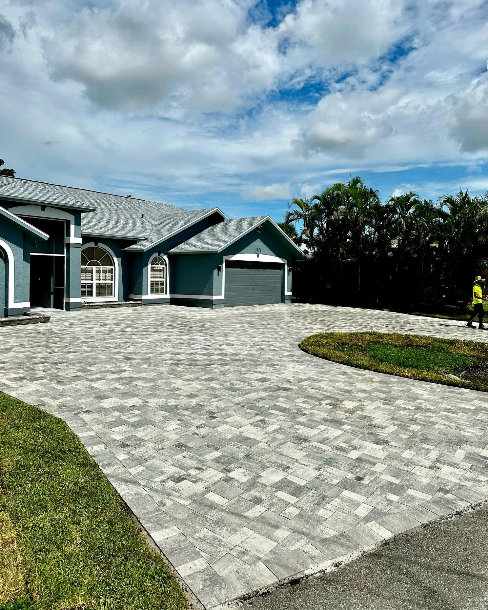
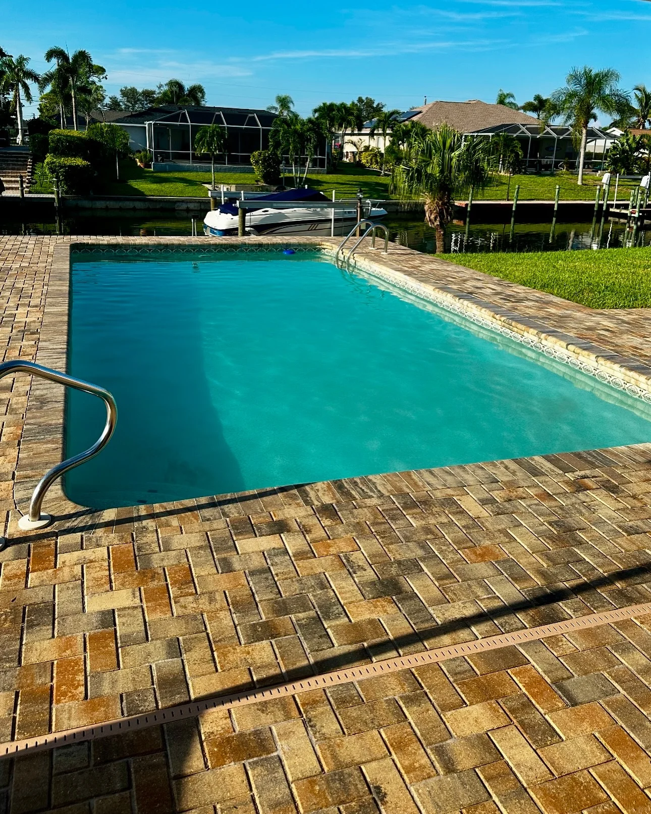
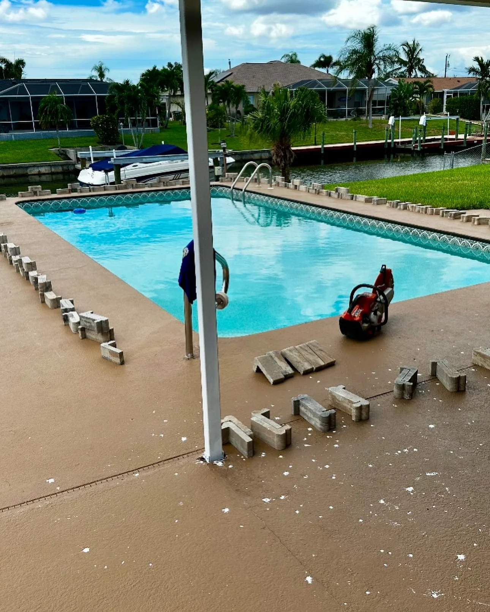
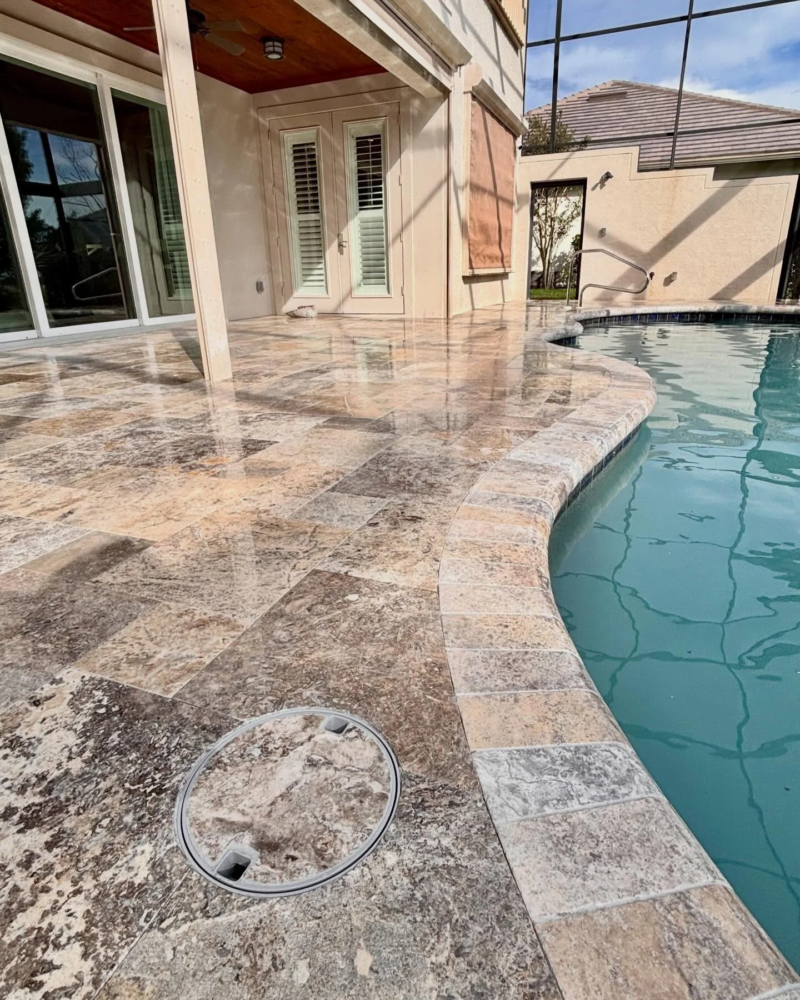
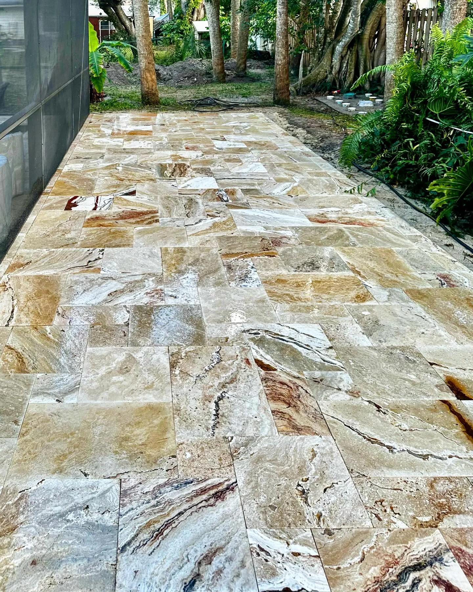
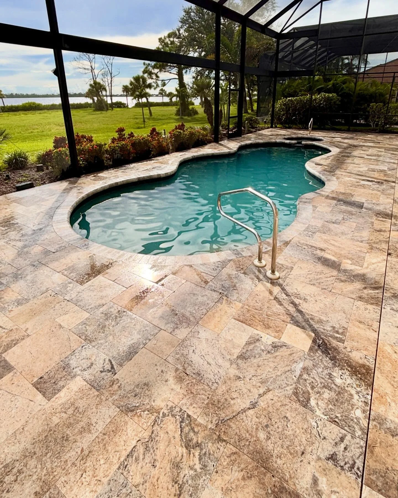

01
Driveways & walkways
A beautiful welcome, from the curb to your front door.

INDEPENDENT PAVER CONTRACTOR
Pavers. Travertine. Possibilities.
Crafting the outdoors you call home in Southwest Florida.
YOUR VISION. OUR CRAFT.
01 / THE TRANSFORMATION
Real homes. Real transformations.
Explore what’s possible for your space.

THE BEFORE & AFTER COLLECTION
A fresh paver surround brings a new finish to this lakeside pool deck.
↔ Drag to see the transformation
Imagine your transformation ↗02 / OUR EXPERTISE
From a welcoming driveway to your favorite
place to unwind. Every detail matters.

A beautiful welcome, from the curb to your front door.

Natural texture and thoughtful finishes for life by the water.

More room to gather, unwind, and enjoy your own backyard.

OUR WORK. YOUR EVERYDAY.03 / THE PEOPLE BEHIND THE PAVERS
We’re Pave The Way RN, a family-owned, independent paver contractor based in Southwest Florida.
From new installations to giving existing pavers a fresh start, we bring careful workmanship and clear communication to your project—every step of the way.
04 / WORD FROM OUR NEIGHBORS
Delivered a product higher than my expectations.
They were on time, provided good quality work
Very professional and personal as well.
Rating and review count checked September 27, 2026. Read the full reviews on Google ↗
LET’S PAVE THE WAY
Tell us what you have in mind.
We’ll help you take the first step with a free estimate.
PROUDLY SERVING SOUTHWEST FLORIDA
Lee, Collier & Charlotte counties